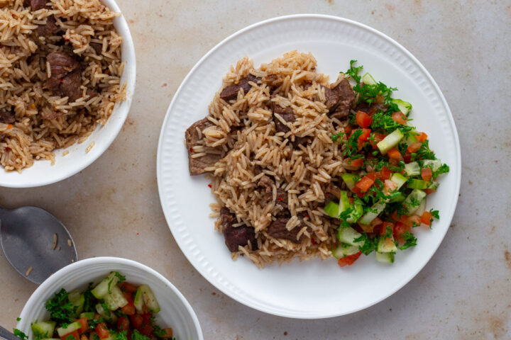

Pilau Recipe

Kenyan pilau is a fragrant and flavorful rice dish that is a staple in Kenyan cuisine. It is known for its aromatic spices and rich taste. The dish typically combines basmati rice with a variety of spices such as cumin, cloves, cardamom, cinnamon, and bay leaf.
How to prepare Pilau
Ingredients
- 2 cups basmati rice
- 1 kg (2.2 lbs) bone-in chicken or beef, cut into pieces (optional)
- 1 large onion, finely chopped
- 3 cloves of garlic, minced
- 1-inch piece of ginger, grated
- 3 tablespoons vegetable oil
- 2 teaspoons cumin seeds
- 4-5 whole cloves
- 2-3 green cardamom pods
- 1 cinnamon stick
- 1 bay leaf
- 1 teaspoon turmeric powder
- 1 teaspoon ground cumin
- 1 teaspoon ground coriander
- 1/2 teaspoon ground black pepper
- 1 teaspoon paprika
- 2 tomatoes, chopped
- 3 cups water or chicken/beef broth
- Salt to taste
- Fresh cilantro (coriander) leaves for garnish (optional)
- Lemon wedges for serving
Instructions
- Rinse the basmati rice under cold water until the water runs clear. Soak the rice in water for 30 minutes, then drain and set aside.
- In a large pot or Dutch oven, heat the vegetable oil over medium heat. Add the cumin seeds, cloves, cardamom pods, cinnamon stick, and bay leaf. Sauté for a minute until the spices become fragrant.
- Add the chopped onion to the pot and cook until it turns golden brown, stirring occasionally. This should take around 5-7 minutes.
- Stir in the minced garlic and grated ginger, and cook for an additional minute.
- If using meat, add the chicken or beef pieces to the pot and cook until browned on all sides. If not using meat, skip to the next step.
- Add the turmeric powder, ground cumin, ground coriander, black pepper, and paprika to the pot. Mix well to coat the meat or onions with the spices.
- Add the chopped tomatoes and cook until they soften and release their juices.
- Add the soaked and drained rice to the pot. Stir well to coat the rice with the onion and spice mixture.
- Pour in the water or chicken/beef broth and season with salt according to your taste. Bring it to a boil.
- Once boiling, reduce the heat to low and cover the pot with a tight-fitting lid. Simmer for about 15-20 minutes or until the rice is cooked and the liquid is absorbed. If using meat, ensure it is cooked through and tender.
- Once the rice is cooked, remove the pot from the heat and let it sit, covered, for an additional 5 minutes. This will allow the steam to finish cooking the rice and make it fluffy.
- Fluff the rice gently with a fork.
- Serve the Kenyan-style pilau hot, garnished with fresh cilantro leaves if desired. Squeeze some lemon juice over the pilau for added freshness and tanginess.
This pilau recipe can serve approximately 4 to 6 people, depending on the portion size and individual appetites. Adjustments can be made to the quantities of ingredients based on the number of servings desired.